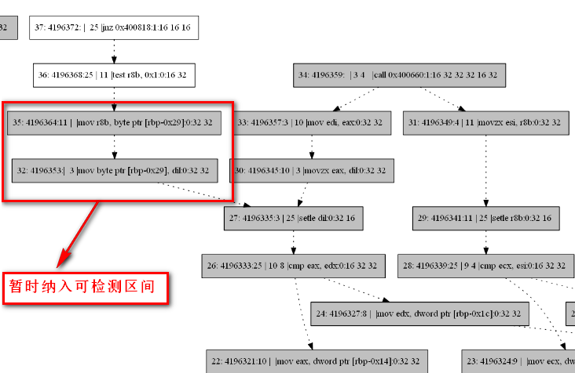

面向SEU的程序可靠性分析技术主要涉及到的工具有：基于PIN的程序动态分析工具，利用python实现的动态依赖图（Dynamic Dependency Graph， DDG）生成工具，基于LLVM的软加固工具。
1 基于PIN的程序动态分析工具
坑：进行动态profile时，打印出的static instruction中有遗漏，造成DDG绘制不完整
原因：为了聚焦在分析的代码上，在进行动态插桩时需要进行筛选，通常使用filter，通过指定Routine的名字来进行筛选。但我采用了他人开发的pin-tool中的方式，单独实现了筛选功能，不需要指定Routine的名字，直接筛选位于.text段的二进制程序，排除.init / .fini段的影响。但其中有一种筛选方式，筛掉了没有写入寄存器的指令比如store指令（x86中没有store指令，是以move指令实现的）：
1 | REG reg = INS_RegW(ins, 0); |
2 动态依赖图生成及可靠性分析工具
主要功能及实现：
根据“基于PIN的程序动态分析工具”得到的分析结果（静态指令序列，动态指令序列，内存地址访问记录），生成DDG。由于在动态指令序列上进行分析，不需要进行控制流分析，仅仅将指令序列前后依赖的寄存器和内存统一定义为var，针对每条动态指令对Value的读和写，形成DDG。DDG中的edge连接两个动态指令（node），箭头为依赖方向（与传播方向相反），edge上的tag存储了形成依赖的var以及能够传播到下一node的基本单元（unit）的位数unmasked_bits。
针对未加固程序，找到关键指令。关键指令是影响程序执行轨迹、影响输出的指令，我们认为关键指令出错将会导致程序传播路径受到影响，不能够通过程序自身的mask effect自行恢复，简言之，一旦关键指令发生错误，将导致program failure。因此，我们的传播分析，就是分析哪些错误会导致关键指令出错，以致于产生program failure。关键指令的范围包括但不限于：跳转指令，函数调用指令。
找出所有的基本错误集合。基本错误（Basic Error）以$E_u^{(m,n)}$表示，$u$是基本单元，$m$和$n$是起止时间，表示的是基本单元$u$在$m$和$n$时间内产生错误的事件，$u$的每个二进制位经过一个时钟周期称为一个bit-cycle，一个bit-cycle也就是一个脆弱点（vulnerable point）。寻找所有的基本错误集合，也就是找到了所有的vulnerable point。每个Basic Error体现在DDG的edge上，找到基本错误集合，就是要遍历DDG的所有edge，因为我们只关心关键指令，所以遍历 以关键指令为起点，按照依赖关系遍历DDG，目前采用广度优先。
为识别复算域，我们对加固算法做出如下限定，这些假定适用的算法包括EDDI，SWIFT：1）复算域中，除检测语句外，不含有副本变量和原变量的
针对软加固程序，除了找出所有的基本错误集合，还要找到所有能够检测到的错误集合。这里涉及到两个关键技术：检测指令识别和复算域的识别，检测指令是指在DDG中识别出具有错误检测能力的detection_node，我们要求软加固时就对检测指令提供相应的标签，这样检测指令的识别就比较显然了。复算域是从副本变量产生到检测指令的区域，也就是说，复算域中的所有变量都是受到检测指令保护的。一个复算域可能包含另一个复算域，因为检测指令的覆盖范围可能有重叠，我们将识别出所有的复算域，并将所有受保护变量的的bit-cycle加入受保护集合（Guarded-set）。我们将复算域中，副本变量从产生到被检测之间的运算称为副本运算，相应的原始运算过程称为原始运算，由于错误传播机制，副本运算中可能涉及到多个副本变量，也可能涉及到一些没有经过复算的变量，每一条副本运算也不一定有完全相同的原始运算（例如：差异性变换，多版本复算，等）。注意：与LLVM中的分析不同，LLVM的IR中，每条指令的写入目标只有一个，采用SSA方式，且每个指令的输出与这条指令之间可以隐式转换（利用了operator重定义）。识别复算域的关键是找到所有副本变量生成指令，即，副本生成指令的识别。副本生成指令与具体采用何种加固算法有关，以SWIFT数据流加固算法为例，副本生成指令在DDG中可能存在如下特征：1）存在两条依赖于同一Value的，并且从检测指令出发的指令节点；2）至少其中一条是mov指令（在SWIFT算法中，因为副本生成通常都是以从内存中读取数据开始，将内存中的数据读取到两个不同的寄存器中，通常两条都是mov指令，但在CallInst、StoreInst等指令也需要复算时，可能只有一条mov指令来生成副本，目前的LLVM自动加固工具中，没有针对CallInst和StoreInst的复算机制，所以所有的副本生成指令都是两条mov指令）。如下图所示，以检测节点5开始，根据特征1），找到了$I_v$和$I_b$两个节点，根据2）筛选出$I_v$是副本变量的生成节点，而$I_b$不是，图中深背景色的点，即为复算域中包含的所有指令。
- 从DDG中识别某个检测节点i所保护的复算域的具体算法如下，其中，DDG中的两个节点u和v中，如果u读取了v定值的数据，则称u依赖于v，在节点u中保存从u指向v的一条依赖边dEdge，同时，在节点v中保存一条传播边pEdge，每条边都存储了toNode，fromNode，以及建立依赖的VALUE。因为DDG会被多次访问，我们给每条边设置了visisted_time属性，用以区分当前的遍历是否。
1 | Find-SoR(DDG, i) |
上述算法中，首先从检测节点开始，沿着依赖边进行广度优先遍历，并将所有可以到达的节点存到集合T中；然后，再次从检测节点开始进行广度优先遍历，找到复算域的边界——副本生成节点或引用同一变量的节点。此处看似我们假定了每条指令只定值一个VALUE，但实际并非如此，如果存在某个指令节点定值了两个VALUE，分别为V1和V2，其中V1被复算，V2被复算域中的两条指令直接引用，那么该指令节点仍然会被从V1复算的边进入并纳入复算域，并且不会将V2视为被复算保护。总之，尽管DDG是以指令为节点建立起来的，我们对复算域的选取仍然以VALUE为主要依据。
在性能上，上述算法虽然有3重循环，但loop2中的循环控制变量“指令依赖的VALUE数”通常小于3，loop3中的循环控制变量“依赖于当前指令定值的VALUE的指令数”通常也是常量级别，因此上述算法仍然是$O(n)$的，$n$是DDG中所有指令的条数。
识别出SoR中包含的指令之后，就可以针对这些指令构成的子图DDG’进行遍历，以获取受到检测指令保护的基本错误集合，并根据错误集合计算出错误区间。这里的关键问题是，各个基本错误集合中的错误区间是存在重合的，获取到错误集合后，不直接计算脆弱区间，而是针对不同的VALUE，对区间进行再次合并，最后进行统一计算。如下图中，指令2使用了32位的v，指令3使用了16位的v，基本错误集合为${v{32}^{(1,2)}}$ 和 $v{16}^{(1,3)}$，其中1~2指令周期内的错误区间在两个基本错误中都覆盖到了。在计算错误区间时，需要进行重新整理，将错误集合整理为互不包含的两个基本错误$v{32}^{(1,2)}$和$v{16}^{(2,3)}$，注意，这里两个基本错误的unmasked-bits是不同的，在整理基本错误集合时，要优先按照大的值进行。
利用DDG对加固后程序可靠性进行分析的能力：
传统的对于软加固程序的可靠性分析方法采用理论分析或形式化验证的方法，分析算法层面的漏洞，常见的软加固漏洞有： 软错误发生在该数据的错误检测和引用之间。数据在错误检测时没有发生错误，但在错误检测和下一次引用之间发生了软错误，致使错误检测失败； 软错误发生在基址寄存器等特殊部件，导致某些软错误在检测时不会被发现，但仍然导致错误结果。
我们的分析方法直接从程序最终的可执行代码出发，分析粒度更加细致，分析结果更加精确，除能够达到以往分析方法的全部能力外，该方法还能够检测出由于编译器优化造成的软加固机制的失效，如使用同一寄存器存储副本变量和原始变量，指令顺序调整，寄存器数量不够或函数调用时保存寄存器现场时的错误区间。除此之外，我们可以有选择地分析目标代码的某一指定区域的可靠性，这对于评估软加固效果，确定检测盲区是十分重要的，并且可以区分在只针对部分代码进行加固的情况下，程序整体的可靠性能够达到怎样的状态。
主要存在问题：
- 时间空间开销问题。由于采用动态分析，程序的动态指令序列的长度，内存读写记录的长度都会随着输入的规模扩大，而变得很大，目前的算法复杂度几乎是O(n)，在执行效率上还算过得去，但在空间上，如果所有的数据都要存储到内存中操作，会导致内存不足，无法完成运算。为此，我们采用分块计算的方法，将动态指令序列和内存读取数据按照一定的规则进行分割，分别运算然后再合并到一起。分割不能破坏指令序列中的数据依赖关系。
- 软加固程序的可靠性分析问题，由于采用的是中间代码级的软加固实现，编译后端的优化会破坏掉软加固机制，经过试验，即便不打开优化开关，后端编译仍然会导致软加固机制的严重损坏，为此，我们暂时折中采用将软加固代码封装在函数中，这样才使得软加固机制的错误检测能力得以保留，但因为引入和新的函数调用，使得部分寄存器会由于保留现场而进行入栈出栈操作，反而增大了脆弱区间，因此，尽管软加固机制能够检测大量的错误，软加固后的程序可靠性相较未加固程序仅提高了10%。
由于该问题是由中间代码加固实现导致的，而从根本上解决这个问题，需要从编译后端及编译开关的选取上进行。在没有解决中间代码软加固实现问题之前，如果需要对SWIFT算法的可靠性进行测试，需要一些小trick，即，将由软加固导致的出栈入栈过程纳入到可检测区间。尽管这样的做法与完美解决问题之间有一定出入，但在现阶段已经是最能够接近真实加固后的效果了。如下图所示：

- 暂不支持对控制流加固算法和ABFT加固算法的可靠性分析。